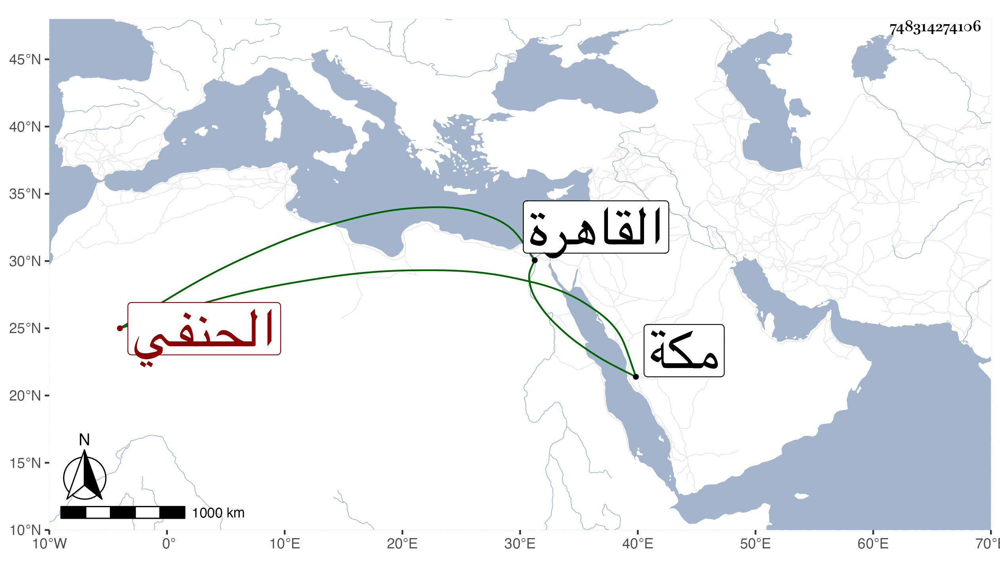

0902Sakhawi.DawLamic.ITO20230111-ara1.EIS1600.748314274106
Biography ID: 748314274106
674
فاطمة المدعوة ستيتة وربما يقال لها ناجية ابنة القاضي كمال الدين محمود ابن ... ابن شيراين الحنفي . ولدت كما كتبته لي بخطها في سادس المحرم سنة خمس وخمسين وثمانمائة بالقاهرة ويظهر أنه قبل ذلك ونشأت فتلعمت الكتابة وما تيسر ، وتزوجت الناصري محمد بن الطنبغا واستولدها ابنتها فاطمة وغيرها ثم مات عنها فتزوجها العلاء علي بن محمد بن بيبرس حفيد ابن أخت الظاهر برقوق فاستولدها بيبرس ولاحظ لها في ذلك مع براعتها في النظم وحسن فهمها وقوة جنانها حتى كانت فريدة فيما اشتملت عليه ، وقد حجت سنة أربع وثمانين سنة حج الملك ثم سنة ست وثمانين ثم سنة أربع وتسعين وجاورت في هذه بجوارنا ثم في سنة ثمان وتسعين مع ابنها وجاورا في التي تليها ومما كتبت به إلى بعد مجيء الخبر بموت أخوى من نظمها :
| قفا واسمعا منى حديث أحبتى | فأوصاف معناهم عن الحسن جلت |
| أناس أطاعوا الله نارت قلوبهم | وأبصرت الاشياء من غير نبأة |
| وقدكوشفوا عن كل ما أضمر الفتى | ونارت قلوب منهم ببصيرة |
| ينفعنى الله العظيم بمن لهم | براهين قد أبصرتها عن حقيقة |
| تناهت إلى أن كدت أبغى سؤالها | فتبدأنى اذ ذاك من غير مهلة |
| وتمنحني ما رمته غير مرة | رعاها الهي في مغيب وحضرة |
| فان قيل للخير الجزيل معادن | فها هي أم الخير من خير فتية |
| تجمعت الخيرات فيهم وقد حبوا | من الله مولاهم بأعظم منة |
| نعم هي أهل للجناب الذى له | علوم حديث في الوجود بحكمة |
| ومن خصه الله العظيم بفضله | فروى حديثا صادقا عن نبوة |
| فمنطقكم أعيا الورى وبيانكم | على نحو إعراب ومن صرف همة |
| جمعت علوم الله يا مفرد الورى | ونلت اتضاعا من آله برفعة |
| وأما الذى أدعو لها الله دائما | فآمنة فيكم لآخر مدة |
| وان كرهت من حادث الدهر فرقة | فجنة عدن بالمكاره حفت |
| أثابكم ربي وعظم أجركم | على فقد أحباب وأحسن جيرة |
| كرام سموا علما وحلما وسوددا | وكنتم بهم في غبطة ومسرة |
| قطعتم لذيذ العيش وصلا بقربهم | فوا أسفا عند الفراق وحسرة |
| نعم هكذا أيدى المنية لم تزل | تفرق إخوانا على حين غفلة |
| فكرر لذكراهم على السمع ربما | به سيدى عن رؤية العين أغنت |
| فهم في سويداء الفؤاد وان نأوا | ومنزلهم منى مكان سريرتي |
| لهم برسول الله إذ ذاك أسوة | أثابهم الله الجزاء بجنة |
| وان أفلت تلك البدور التي زهت | فها شمس دين الله خير الذخيرة |
| هو العالم الحبر الامام الذي له | بفضل وجود شهرة اي شهرة |
| فليس له في حضرة غير منحة | وليس له في خلوة غير جلوة |
| وماذا عسى عنكم أبث محاسنا | كثيرات لم تحصى وان قلت قلت |
| فانتم خيار الناس حقا بلا امترا | فديتكم من كل سوء بمهجة |
| حماكم آله العرش من كل حادث | لتنفع بالآداب جمع الخليفة |
| وأسكنك الفردوس منه كرامة | ولكنني أرجوه من غير محنه |
| بحق نبى جاء للخلق رحمة | محمد المبعوث من أرض مكة |
| [... ... ... ... ... ... ...] | وآل وصحب خير صحب وعترة |
| عليه صلاة الله ماهبت الصبا | وتحمل أشواقي إلى نحو طيبة |
وكذا كتبت إلي بغير ذلك ، ومنه وقد بلغها عن بعضهم بعض كلام :
| يا سيدا ماله مثيل | من في المهمات أرتجيه |
| ماذا تقل في امرئ خبيث | يحسد ذا سودد عليه |
| يريد بالقول ينتقصه | وقوله راجع اليه |
| فاسمع كلام امرئ لبيب | لجاهل رام يزدريه |
| ماضر بحر الفرات يوما | لو خاض بعض الكلاب فيه |
ومنه حين طالعت كتابي ارتياح الأكباد لتتسلى عن ابنة أثكلتها سائلة عن شيء من الأبيات التي أوردتها فيه فقالت :
| يااماما قد حاز علما وفهما | وله في الورى محاسن جلت |
| ما رأى الشاعر اللبيب بقول | جرح القلب والدموع استهلت |
| فاصطبر وانتظر بلوغ مداها | فالرزايا اذا توالت تولت |
| اي توالت له بعين استقامت | أو توالت عنه بعين اضمحلت |
| لم أطق سيدي بلوغ مداها | ضعفت قدرتي لذلك وكلت |
| اخبروني عن نطفة ببيان | نلت أجرا ورتبة قد تعلت |
| لا ترخص لما اصبت ولكن | كثرت بلوتي وان هي قلت |
| وكذا النفس نالها مادهاها | فاشمأزت وبعد عز فذلت |
| بنت عبد لعبدكم يا مفدى | طربت في مصنف وتملت |
| تسأل الله أن يزيدك فضلا | بحبيب له الغمام أظلت |
فقلت يا بديعة المعاني ورفيعة المباني ومن فاقت الكثير من الرحال فضلا عن النساء وراقت ابياتا فحاكت الخنساء حفظ الله تعالى دينك ودنياك وأراك كل محبوب في بنيك وعقباك تجرع الصبر على المكروه مسبب لطمأنينة النفس ورضاها بما أوقعه مولاها ويكون تواليه لذلك مخففا لألمه منزلا له منزلة ارتفاعه وعدمه لألفه له وترجيه به لكل ما أمله ولذا حفت الجنة بالمكاره والتشاغل بالاولاد والاذكار الصحيحة الايراد والعبادة والزهادة مانع من استرسالها في هواها سيما مع النظر في الآيات والآخبار الواردات النبويات المرغبة في الصبر التي منها بشارة الله سبحانه للقائمين فيه بما أمرهم به بهدايتهم للجنة والثواب والحق والصواب وقوله ومن يؤمن بالله يهد قلبه ولا انفع في ذلك من مصنفي ارتياح الاكباد فهو غاية في الاعتماد بل مرهم للقلوب والاجساد ثم انه لا مانع فضلا من ارتفاع المكروه أصلا مع الاثابة أن وجدت الانابة فالمصائب مفاتيح الأرزاق والصبر عقباه الفرج وعند التناهي يكون الفرج وربما يكون الفرج بالقدوم على الله سبحانه وتعويضه بالفضل الجزيل والفعل الجميل مما هو أعظم مفروح به ولكن الدعاء بطول عمر السائلة للازياد من الخيرات والاجتهاد في الفضائل المتكائرات الموجبة لجلب المسرات وسلب المضرات من المهمات على أن قول الشاعر مداها لا يتمحص للكثرة واقامة الامد الطويل فقد يكون مداها قدره الله تعالى للمصائب لحظة أو نحوها كما أنه لا يتمحص تولت في اضمحلت لما قررناه وحينئذ يخف الاستشكال المتقضى للسؤال المفتقر للرجال والله المستعان وعليه التكلان قاله وكتبه السخاوي محمد بن عبد الرحمن راجيا الستر والغفران متوسلا بسيد ولد عدنان صلى الله عليه وسلم تسليما كثيرا ، ثم كتبت إلى سائلة أيضا بقولها :
| يا أيها الحبر وبحر الندى | يا حافظا نقل حديث قديم |
| يا منحة في دهره لم يزل | ممتدحا من كل فاء وميم |
| يا غاية الآمال يا منيتي | يا من به أضحى غرامي غريم |
| يا شمس دين الله يا من غدا | بكل علم في البرايا عليم |
| وياسخاوي يا امام الورى | من خصة الله بعلم جسيم |
| اسئلك يا شيخ شيوخ النهى | ومن حوى في فيه در نظيم |
| فيمن أتاها عائق عاقها | عن أمل صارت به في حميم |
| قيامها إذ ذاك يا سيدي | بين مقام زمزم والحطيم |
| في ليلة أخبرنا أنها | يفرق فيها كل أمر حكيم |
| وهل لها أجر الذي قامها | وهل يساوي مقعدا مستقيم |
| وهل ينلها مثل ما نالهم | تكرما من فضل رب كريم |
| اخبرن يا منيتي عاجلا | يا من ذكاه فاق فهم الفهيم |
| يا من فتاويه إذا أبرزت | يكاد ذا فهم بها أن يهيم |
| صلاحك الظاهر بين الورى | اتمامه اذ ذاك بر اليتيم |
| يهنك شعبان الذي قدره | مازال عند الله قدر عظيم |
| أحياكم الله لأمثاله | تروى صحيحا نقله لاسقيم |
| أنتم ومن لاذ بكم في الورى | بحق رب بالخفايا عليم |
| بجاه من أسرى به في الدجى | وكان للمولى كليم نديم |
| محمد المختار من هاشم | سيد سادات النقا والحطيم |
| صلى عليه الله طول المدى | ما ناح قمرى بصوت رخيم |
الحمد لله هذا أمر كتبه الله على بنات آدم فطيبى نفسا وقرى عينا بتفضل الله سبحانه ان شاء الله عليك بثواب ما كنت تؤملين فعله فقد صح قوله صلى الله عليه وسلم (( من هم بحسنة فلم يعملها كتبت له )) أي سواء كان له عذر أو لا ولكنه في المعذور كهذا أغلى لأنه يكتب له ما كان يعمله قبل حصول العارض ففي الصحيح أيضا أنه صلى الله عليه وسلم قال (( ما من أحد من الناس يصاب ببلاء في جسده الا أمر الله عز وجل الملائكة الذين يحفظونه بكتاب ما كان يعمل من خير في كل يوم وليلة له ما دام محبوسة بوثاقه )) وفي لفظ عنه صلى الله عليه وسلم (( اذا مرض العبد أو سافر كتب له ما كان يعمل مقيما صحيحا )) فإن توجه هذا المبتلي بتفويت ما كان نواه وفاته الوقت المشروع لمن أداه وعمله فيما بعده من الايام والليالي في شهره أو غيره كان الثواب أجزل والفضل أشمل ولا شك ان رب شعبان ورمضان واحد وهو الاله الواحد وفضله وجوده وكرمه للضعفاء من الموحدين في كل يوم بل لحظة وارد والآعمال بالنيات والفضل جزيل . وكذا كتبت إلى بلغز في اسمي ونسبي في خمسة وعشرين بيتا أوله :
| يا إمام الناس يا أوحد الورى | ويا من حوى كل العلوم ولم يزل |
ثم بلغز آخر في اسم محمد أوله :
| يا مفردا علومه مجمله | وعالما مولاه قد جمله |
فبادر الشهاب أحمد بن صحصاح محمد بن محمد بن علي بن عمر الفيومي الخانكي وأجابها عنهما اجمالا في خمسة أبيات أولها :
| فديتك يا من جاء باللغز معريا | باسم امام العصر في العلم والعمل |
حسبما أسلفت ذلك كله عند ترجمته ، واتفق حضورها حين قراءة علي بن ناصر فكتبت اليه أبياتا أولها :
| يا أيها الحبر الامام الذي | كل به بين الورى مقتدى |
فأجابها بما هو مع السؤال بخطه عند اسمه مما تقدم فلم يرتض أحد جوابه مع أن فيه ما ليس بموزون وما هو من بحر آخر وحينئذ أجابها الشهاب المشار اليه بقوله :
| الحمد لله به ابتدى | يا سائلا تفريج قلب صدى |
| اسمع هديت الخير طول المدى | ولا خلوت الدهر من حسد |
| فما رأينا قط من حاسد | يغبط الا لذوى السودد |
| وخذ جوابا كافيا شافيا | في آخر النحل به فاهتد |
| أو فخذ العفو وأعرض عن الجاهل | ذي الفعل الخبيث الردى |
| ومثل ذا فانظر ترى جملة | كثيرة تبدو لمسترشد |
| هذا جواب وفق ما قلته | ذلك فضل الله يا مسعدى |
| وقاله أحمد حرفوش تلميذ | الامام العالم الاوحد |
| أعنى السخاوي امام الورى | وحافظ العصر الكريم اليد |
| ثم صلاة الله المصطفى | وآله الغر بهم نهتدى |
ولما كتبت اليها لتخبرني بمولدها وبعض حالها كتبت إلى بما نصه : وأماما اراده المولى في بيان أمر هو به أولى فذلك منه جود أو فضلا فانني لست لذلك أهلا لكن اذا رأى سيد أن يرفع عبده فعل ويرقى به ابدا إلى أعلى محل بل مدحت القاضي وابن عمه الزينى عبد الباسط والشهاب بن حاتم وغيرهم فقصيدة القاضي نحو سبعين بيتا أولها :
| يا بدر تم ازال الشك عن رأي | انعم بقرب محب فيك عن رائي |
والذي قالته في ابن عمه الزينى وذلك حين توعكه وشفائه عدة ابيات أولها والقصيدة في ابن حاتم أولها :
| يا سيدى وامام الناس كلهم | ومن حباه بعلم ثم بالحكم |
وقد قدمتها عند اسمه ، وتوسعت حتى كتبت لصالح أخي القاضي الحنفي بسبب سكناها في الخلوة المتعلقة به وقد جعلتها عند اسمه ايضا ؛ وطارحت الشهاب الحرفوش الخانكي وعلي بن ناصر وغيرهما بل أعلى من هذا أن الشهاب المنصوري كتب للزين سالم :
| أيا سيدا قد حسن الخالق اسمه | وجمله والله بالخلق عالم |
| أعن بيد فيها أياد لسائل | ولا تخشى حسادا فانك سالم |
فقالت هذه بديها :
| أيا سيدا عم الخلائق بره | واحسانه فرض تضاعف لازم |
| أعن سائلا يأتيك والدمع سائل | ولا تخشى من سوء فانك سالم |
وكان ذلك بحضرة السراج العبادى وغيره فرجحوهما بل وافق المنصورى على ذلك .
